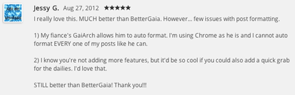

This update was made cause I saw a Review on GaiArch for Google Chrome asking from a user asking for a draw all feature and saying she loves GaiArch more than BetterGaia, also saying her fiancé can do something with auto formatting and she can't. I kind of felt bad having something created for draw all but never finished it with that I have been feeling happy and loving love I decided for them I will create it for them and dedicate the feature to them. This is for you Jessy G and your fiancé, I wish you both happy years and healthy children in the future. Screenshot of the review Jessy G left is below.
Features added:
As some of you have known I (Michael Pivonka) have stopped updating GaiArch do to a few reasons. I have stopped updating GaiArch as I have lost interest in GaiaOnline and aswell as being banned on GaiaOnline I have stopped caring about GaiaOnline. As I was main developer and no one that was on the team was capable to take over and work on GaiArch I have stopped updating GaiArch. Well I have created a new account it is Codedninja.
After being banned I have created one extension for GaiaOnline which is a GaiaOnline Dashboard. Basically what it is made to do is to have open and you able to view all things related to GaiaOnline. That includes Subscribed Threads, My Topics, Notices, Requests, Announcements, Friend's Stuff, Private Message Inbox, Outbox, Sent, and Saved without ever having to leave the page ever. To get this google Chrome Extension you can GaiaBoard at the Google Chrome Web Store here. If you find any bugs or want to request a feature send me a private message or post a Review on GaiArch in Google Chrome Webstore.